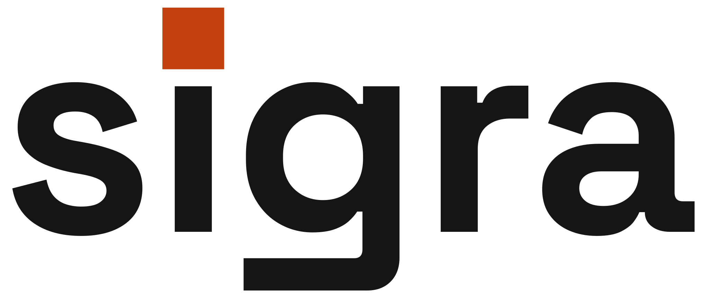
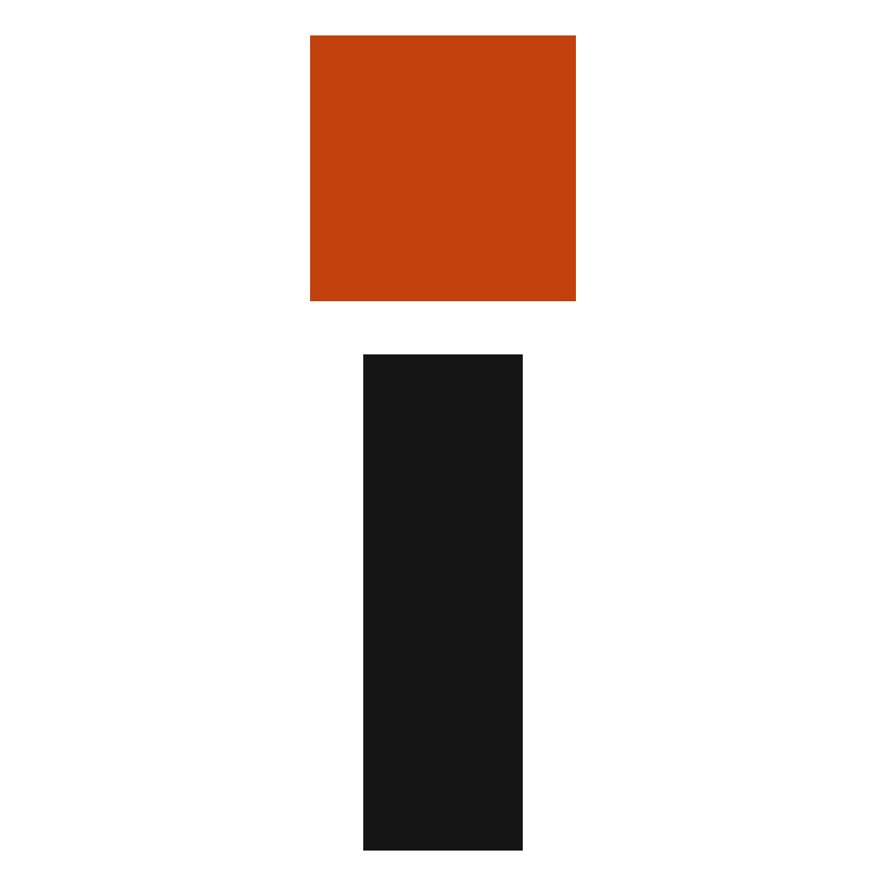

D1
Overshoot Block
The tittle enlarged 174→210 units with optical overshoot above x-height and deepened to ember-700 on light surfaces. The ratified g tail is untouched. Favicon: standalone rail-i, block-to-stem ratio re-tuned to 1.67.


Phoenix auth that ships
Phoenix auth that ships

32px
24px
16px
Strength: the most direct fix for both round-3 flags — the ember-700 block holds at every scale and the overshoot makes the tittle read confident instead of timid.
Risk: ember-700 on light shifts the wordmark personality from apricot-soft toward brick-bold; the square block + bare stem favicon is the most conventional of the three treatments.
Appeal
Distinctive
Concept
Tests whether enlarging and deepening the tittle alone takes the ratified A1 to production grade.